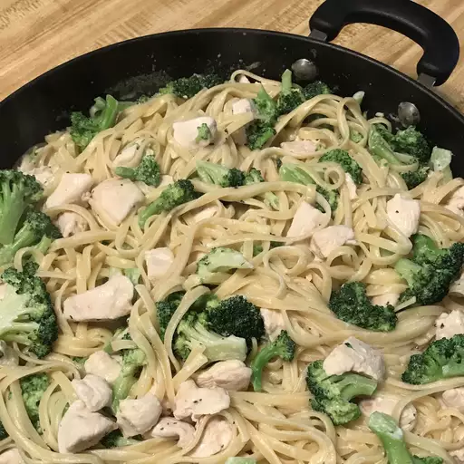

Chicken and Broccoli Alfredo
Return Home

Description
A creamy white sauce, long strands of pasta mixed with tender pieces of lean protein along with broccoli. This is an old and simple recipe. The Italian restaurateur Alfredo Di Lelio doubled the amount of butter used. Alfredo invented his recipe in 1908 in the “trattoria” run by his mother Angelina in Rome, Piazza Rosa.
In U.S. cuisine, cream is used as a sauce base. it may be mixed with other ingredients such as broccoli, parsley, garlic, shrimp, or chicken. Fettuccine Alfredo has now become ubiquitous in Italian-style restaurants in the United States and internationally, although in Italy this dish is not popular at all, as wrongly believed, and it is better known if called "Fettuccine al burro" instead of "Fettuccine Alfredo".
Ingredients
- 8 ounces fettuccine, uncooked
- 2 cups fresh broccoli florets
- 1/4th cup Kraft Zesty Italian Dressing
- 1 pound boneless skinless chicken breasts, cut into bite-sized pieces
- 1 2/3rd cup of milk
- 4 ounces Philadelphia Cream Cheese, cubed
- 1/4th cup Kraft Grated Parmesan Cheese
- 1/2 teaspoon dried basil leaves
Steps
- Cook pasta as directed on package, adding broccoli to the boiling water for the last 2 minutes of the pasta cooking time. Drain pasta mixture.
- Meanwhile, heat dressing in large nonstick skillet on medium-high heat. Add chicken and cook until no longer pink in the center, stirring occasionally, about 5 to 7 minutes.
- Stir in milk, cream cheese, Parmesan cheese, and basil. Bring to a boil, stirring constantly. Cook until sauce is well blended and heated through, about 1 to 2 minutes.
- Add chicken mixture to pasta mixture; mix lightly.